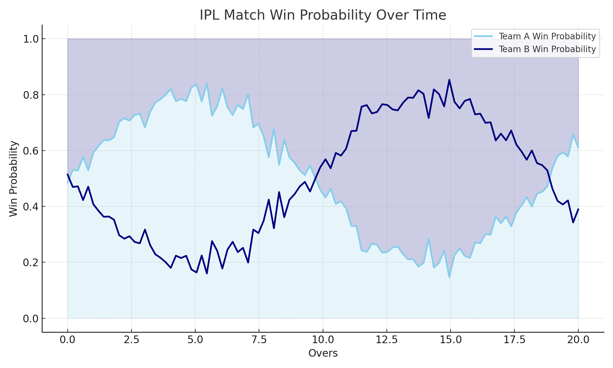
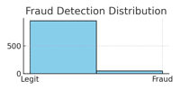
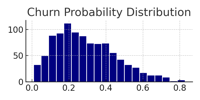

KDataInsights
At KDataInsights, we help individuals and businesses unlock the power of their data. With expert data analysis, machine learning, and insightful dashboards, we turn raw data into real-world impact.
KDataInsights is a growing data science consultancy firm committed to helping businesses and individuals uncover insights from their data. We focus on building data-driven solutions through statistical analysis, machine learning models, and custom data visualizations. Whether it’s customer behavior, financial trends, or sports analytics, we uncover hidden patterns in your data translating raw data into decisions. We deliver actionable insights with clarity and precision. Our mission is to bridge the gap between data and decision-making by combining technical excellence with business understanding.
This project involved building a machine learning model to predict the win probability of an IPL team in real time based on match conditions such as overs, wickets, and score. I used historical ball-by-ball data and match-level statistics, performed data wrangling, feature engineering, and implemented a classification model using logistic regression and random forests. The solution helped demonstrate how analytics can enhance fan engagement and strategic decisions in sports.
In this project, I developed a fraud detection system for financial transactions. Using a large, imbalanced dataset, I performed EDA, handled class imbalance with SMOTE, and built a Random Forest model to classify transactions as fraudulent or not. I focused on model interpretability and deployed evaluation metrics like precision-recall and ROC-AUC to ensure high sensitivity to fraud cases.
I created a predictive model to identify customers likely to leave a subscription-based service. This involved analyzing customer behavior data, identifying churn signals, and building a logistic regression model to predict churn risk. I also created a simple dashboard that helped business teams proactively retain customers.
In this project, I built an interactive dashboard that forecasts monthly sales using historical data. I applied time series forecasting techniques (ARIMA, Exponential Smoothing) and visualized the results using Python (Plotly and Dash). The dashboard allowed business stakeholders to interact with different regions and product lines for better planning.
We'd love to hear from you!
Whether you have a question, a project idea, or just want to connect — feel free to reach out using the links below.

“Your data has a story. We help you tell it—with purpose, precision, and insight.”
– Founder, KDataInsights